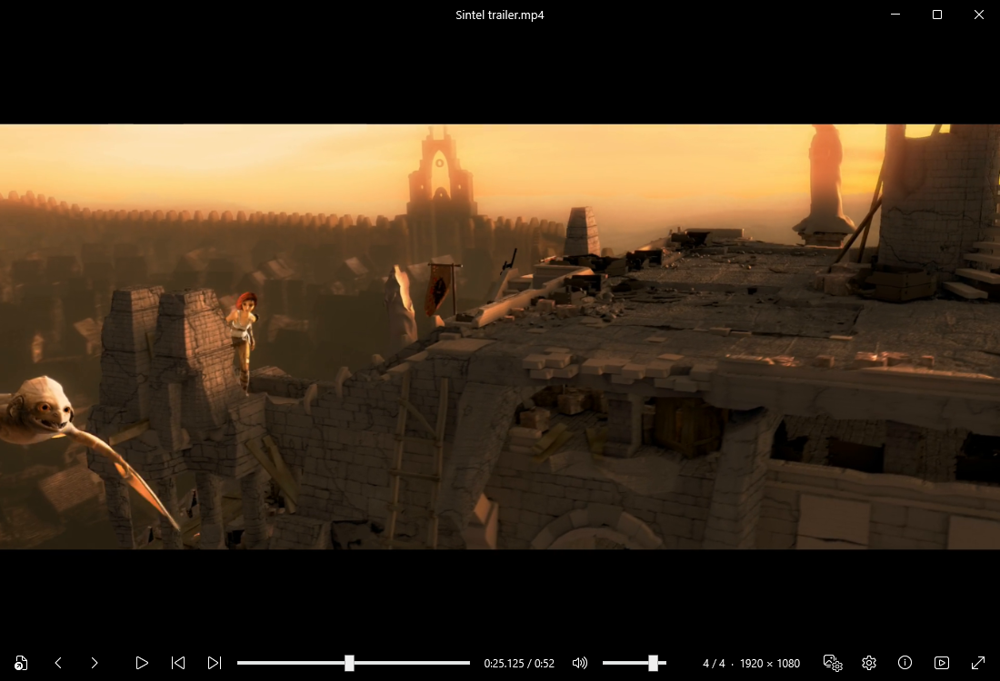
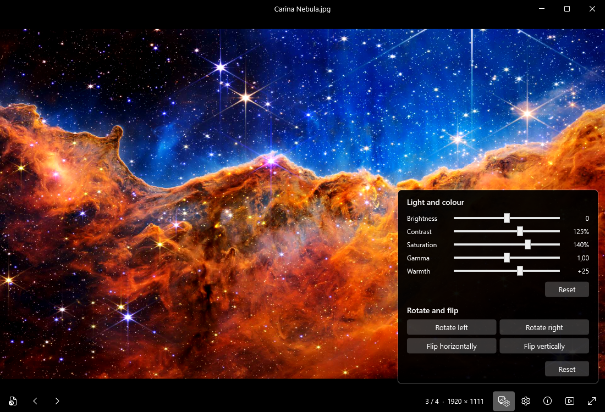
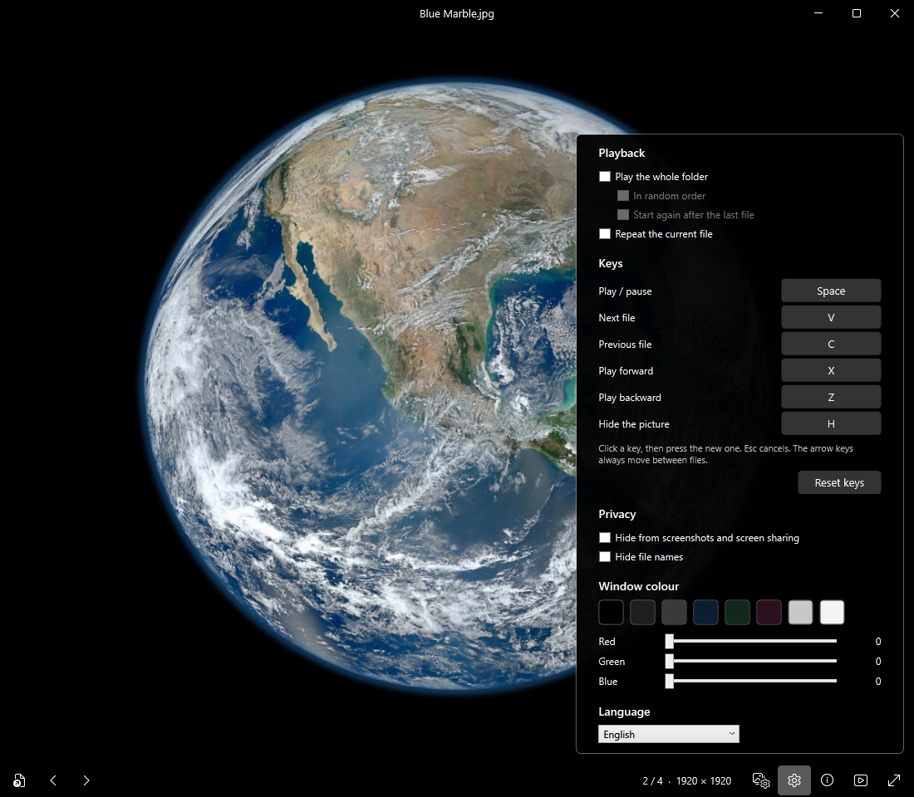

Lo que Reiks Visor nunca hace
Algunos visores y reproductores hacen algo más que mostrar tus archivos: buscan actualizaciones, recogen estadísticas de uso, guardan un historial o crean una biblioteca. Reiks Visor no hace nada de eso.
- Conectarse a internetSin telemetría, sin estadísticas de uso, sin informes de errores, sin comprobación de actualizaciones, sin consultas en línea. Su propio código no tiene ninguna función de red. Sus decodificadores están limitados a archivos locales y rechazan los formatos de lista de reproducción y de streaming, para evitar que un archivo preparado a propósito lo dirija a una dirección web.
- Guardar registro de lo que abresSin historial, sin lista de recientes, sin caché de miniaturas, sin biblioteca ni índice de tus carpetas.
- Mirar dentro de tus imágenesSin reconocimiento facial, sin etiquetado, sin IA, sin «mejoras» en la nube. Reiks Visor no envía nada de tus archivos a nadie.
- Modificar tus archivosNunca escribe en tus imágenes, vídeos ni en sus carpetas: sin valoraciones, sin etiquetas, sin archivos ocultos al lado.
- Ejecutarse en segundo planoSin servicio, sin inicio automático, sin icono en la bandeja. Cuando lo cierras, desaparece.
- Pedirte nadaSin cuenta, sin inicio de sesión, sin anuncios, sin extras incluidos. Instalarlo solo para ti no requiere permisos de administrador.
Lo que hace
Fotograma a fotograma, en ambos sentidos
Pulsa X o Z para avanzar o retroceder exactamente un fotograma. Mantén pulsado para continuar, más rápido cuanto más tiempo. Cada fotograma se decodifica por completo antes de mostrarse, así que un salto no deja la imagen corrupta.
Imágenes, GIF y vídeo juntos
Abre un archivo y recorre todo lo demás de la carpeta con las flechas. Amplía con la rueda del ratón, arrastra para desplazarte, gira y voltea.
Privado también en pantalla
Haz que Windows deje la ventana fuera de capturas, grabaciones y pantalla compartida, que muestran entonces lo que hay detrás. Oculta los nombres de archivo de la barra de título y la barra de tareas. Pulsa H para dejar la ventana en blanco al instante.
Ajustes de imagen
Brillo, contraste, saturación, gamma y calidez para cualquier cosa en pantalla, incluido el vídeo en pausa. Solo afecta a la visualización: tus archivos nunca se modifican.
Tus teclas, tu color
Elige las teclas para reproducir, siguiente, anterior y avance por fotogramas, y el color de la ventana. El texto cambia entre blanco y negro para seguir siendo legible.
Reproducir toda una carpeta
Deja que pase al archivo siguiente cuando termine un vídeo, en orden o al azar, una vez o en bucle. O repite un solo vídeo.


Las capturas muestran la aplicación en inglés; también está disponible en español.
Formatos
| Imágenes | JPG, PNG, BMP, TIFF, WebP, AVIF, HEIC, JPEG XL, JPEG 2000, TGA, QOI, ICO, SVG |
| Animaciones | GIF, PNG animado, WebP animado |
| Vídeo | MP4, MOV, MKV, WebM, AVI, WMV, FLV, MPEG, TS y más, con H.264, H.265, VP9, AV1 y otros códecs |
| Decodificación | En la tarjeta gráfica cuando admite el formato; si no, en el procesador |
| Idiomas | Inglés, español, sueco, francés, alemán, portugués, italiano |
Que un archivo concreto se abra depende de su contenido. Las fotos HEIC hechas con un iPhone se han probado poco hasta ahora. Si un archivo no se abre, avísanos.
No hace falta que nos creas
- Bloquéalo y compruébalo. Deniega a Reiks Visor todo acceso a la red en el Firewall de Windows; si instalas para todos los usuarios, el instalador te ofrece añadir esa regla. Todo sigue funcionando, porque nunca necesitó conexión.
- Lee el código. Reiks Visor es de código abierto. El instalador y el zip se compilan a partir de ese código en los servidores de GitHub, en público. GitHub firma para cada uno una declaración que indica a partir de qué código se compiló, así cualquiera puede comprobar que una descarga procede realmente del código publicado. Las bibliotecas FFmpeg que incluye no se compilan allí: son una compilación pública sin modificar, identificada por su suma de comprobación en los avisos.
- Comprueba tu descarga. Cada versión publica la suma SHA-256 de cada archivo.
Lo que Reiks Visor no puede controlar
Windows guarda algunos registros por su cuenta, y Reiks Visor no tiene control sobre ellos. Cuando abres un archivo con doble clic en el Explorador, Windows puede añadirlo a su lista de archivos recientes (Configuración → Personalización → Inicio → «Mostrar elementos abiertos recientemente»). Reiks Visor pide a Windows que no añada a esa lista los archivos abiertos desde su propio cuadro Abrir, pero Windows puede seguir recordando en qué carpeta estuvo ese cuadro por última vez. Si Reiks Visor llegara a fallar, el Informe de errores de Windows puede registrar el fallo, como con cualquier aplicación. Los datos de diagnóstico de Windows y Recall también son ajustes de Windows, en Privacidad y seguridad.
«Ocultar en capturas» se apoya en una función de Windows. Windows la aplica a las formas habituales de capturar la pantalla: Impr Pant, la Herramienta Recortes, los grabadores de pantalla y la pantalla compartida de las aplicaciones de reuniones. No puede impedir que una cámara apunte a tu pantalla ni detener un programa hecho para saltársela, y no la hemos probado con Windows Recall.
Si abres un archivo desde una unidad de red o una carpeta sincronizada con la nube, es Windows o tu programa de sincronización quien mueve esos datos por la red, como con cualquier aplicación. Y, como todo reproductor, Reiks Visor tiene que decodificar lo que contenga un archivo: un archivo dañado a propósito podría hacer que falle o se comporte de forma inesperada, así que mantenlo actualizado y ten cuidado con los archivos de origen dudoso.
En el uso normal, el único archivo que escribe Reiks Visor son tus opciones: tus teclas, el color de la ventana, el idioma y tus preferencias de reproducción y privacidad, en %APPDATA%\ReiksViewer\settings.json. No contiene nada sobre tus archivos. Al desinstalar se elimina; si usas el zip portátil, borra tú esa carpeta.
Instalación
Windows puede avisarte la primera vez. El instalador aún no está firmado digitalmente, así que Windows puede mostrar «Windows protegió su PC». Elige Más información y luego Ejecutar de todas formas.
Para comprobar que tu descarga está completa y coincide con el archivo publicado, compara su suma SHA-256 con SHA256SUMS.txt. En PowerShell: Get-FileHash ReiksViewer-Setup-1.3.0.exe
Instalar solo para ti no requiere permisos de administrador; instalar para todos los usuarios, sí. El instalador puede añadir Reiks Visor a la lista «Abrir con» del Explorador. Para actualizar, ejecuta un instalador más reciente sobre el anterior; «Buscar actualizaciones» en la aplicación (F1) abre la página de descarga en tu navegador, y la aplicación en sí sigue sin conexión.
Reiks Visor está probado en Windows 11. También debería funcionar en Windows 10, pero eso aún no se ha probado.
Código abierto por dentro
Reiks Visor decodifica imágenes y vídeo con bibliotecas del proyecto FFmpeg, con licencia GNU Lesser General Public License. FFmpeg se incluye como archivos DLL independientes y sin modificar, que puedes sustituir por tu propia compilación. El código fuente de FFmpeg de la compilación incluida se publica con cada versión, y los avisos completos están en THIRD-PARTY-NOTICES.txt, dentro de la carpeta de la aplicación.
Reiks Visor no está afiliado al proyecto FFmpeg ni cuenta con su respaldo. FFmpeg es una marca de Fabrice Bellard.